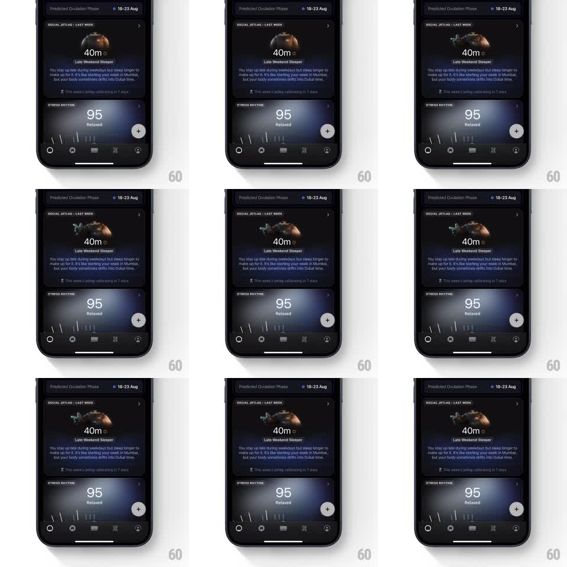

Media
Frame-by-frame

Rebuild this animation 1:1: Ultrahuman's late-sleeper card - a 3D mascot slumps over its pillow in a looping idle inside the Social Jetlag card, while the "40m - Late Weekend Sleeper" verdict sits below.

Rebuild this animation 1:1: Ultrahuman's late-sleeper card - a 3D mascot slumps over its pillow in a looping idle inside the Social Jetlag card, while the "40m - Late Weekend Sleeper" verdict sits below. ## Integration Integration: stack-agnostic spec - springs given as stiffness/damping, timed motions as duration + curve; map every value to your framework and animation library of choice. ## Scene Dark dashboard: phase chip on top, "SOCIAL JETLAG - LAST WEEK" card with the mascot render, the "40m" figure and "Late Weekend Sleeper" label, explainer copy; Stress Rhythm card below. Only the mascot animates. ## Motion spec Pattern: tired idle loop, ~3.5s. - The mascot breathes slowly and heavily: body rises and sinks (+-3% scale, ~1.8s half-cycle) with a lag in the head, reading as drowsy. - A slow roll to one side and back happens once per loop (~20deg, ease-in-out), like someone shifting in their sleep. - Lighting stays dim and warm; a soft shadow under the mascot pulses with the breathing. ## Calibration - Slower and heavier than a happy idle - weight is the storytelling. - Seamless loop; no snap back to the start pose. ## Reduced motion Static mascot, no breathing. ## Don't miss - The mascot never fully wakes or lifts its head - this card's joke is exhaustion. - Card copy and figure are fixed; the mascot is the only moving part.